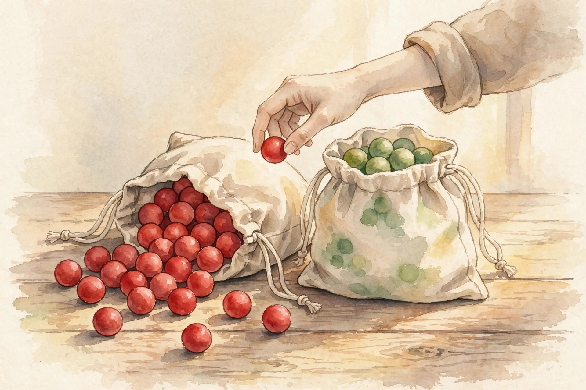

U02 · Latent models and variational inference
Two bags of colored balls, one hidden. The unit learns to sum the bag away, invert the draw, and bound the sums it cannot afford.
Source fact A number, formula, or claim taken directly from the lesson file content/v2/math-genmodels/lessons/u02.md, with its section tag.
Interpretation Companion commentary that connects ideas. It restates, never invents.
Illustration A toy or figure built by this companion for intuition. Numbers here are demonstrative, not lesson numbers.
U02-C05 A pointer to the lesson concept that owns the fact.
No lecture transcript exists for this unit. The lesson is locally authored bridge content, and every leaf carries PLANNED / SOURCE ATTRIBUTION PENDING. This companion narrates the lesson, not a lecture. No source video exists.
Chapter 1 · C01 to C03
Source factU02-C01 The running toy: bag A holds 80 percent red and 20 percent green. Bag B holds 30 percent red and 70 percent green. The prior probability of drawing bag A is 0.6, bag B is 0.4. One draw is made and the ball is red. The hidden bag is z in {A, B}. The observation is x = R.

Illustration The two bags and the one red draw. AI-generated watercolor.
Source factU02-C01 The total probability of red sums over the two hidden paths: 0.6 × 0.8 + 0.4 × 0.3 = 0.48 + 0.12 = 0.60. The hidden bag disappeared from the answer. Training on data can only ever score the marginal.
Source factU02-C02 Renormalize by the marginal 0.60: P(A|R) = 0.8, P(B|R) = 0.2. The observation moved the belief from (0.6, 0.4) to (0.8, 0.2). Red is evidence for bag A because bag A is redder. Had the draw been green, P(G) = 0.40 and P(A|G) = 0.3, P(B|G) = 0.7.
Source factU02-C02 Two draws of red: start from posterior (0.8, 0.2) as the new prior. Joint with the second red: 0.8 × 0.8 = 0.64, 0.2 × 0.3 = 0.06. Marginal 0.70. Posterior (0.914, 0.086). Evidence accumulates. R then G gives the same posterior as G then R: 0.096/0.180 = 0.533.
Source factU02-C03 Bayes rule is the C02 computation written once for all x: p(z|x) = p(x|z) p(z) / p(x). The denominator p(x) is the evidence. It normalizes and also scores the model itself: larger evidence means a better model.
Nugget 01 · U02-C01
What happened. Two hidden paths, 0.48 and 0.12, summed to one visible number, 0.60. The bag left the answer.
Why it matters. The joint law holds everything. The marginal is what the data can see. Training on data can only ever score the marginal.
Principle. A latent variable is a nuisance the model sums away. Marginalizing over the wrong latent set makes the likelihood lie.
Nugget 02 · U02-C02
What happened. One red draw moved belief from (0.6, 0.4) to (0.8, 0.2). A second red moved it to (0.914, 0.086).
Why it matters. The posterior answers what explains this observation, not what happens next. Reading p(x|z) as the posterior is the prosecutor fallacy in miniature.
Principle. Prior times likelihood, renormalized. Each new draw multiplies by its likelihood. Order does not matter.
Chapter 2 · C04
Source factU02-C04 Take the convex curve phi(t) = t^2. Average the outputs of 1 and 3 with weights (0.7, 0.3): 0.7 × 1 + 0.3 × 9 = 3.4. Square the average: (0.7 × 1 + 0.3 × 3)^2 = 1.6^2 = 2.56. The average of the curve sits above the curve of the average: 3.4 ≥ 2.56.
Source factU02-C04 The logarithm is concave, so E[log X] ≤ log E[X]. On the toy values: E_q[log v] = -1.1499, log of the mean = -0.9889. Indeed -1.1499 ≤ -0.9889. That flipped version is the engine of variational inference: the log sits outside the marginalization sum, and Jensen moves a tractable expectation inside the log.
Nugget 03 · U02-C04
What happened. Averaging first and curving second undershot: 2.56 against 3.4. With the concave log, the inequality flipped.
Why it matters. The marginal log-likelihood is a log of an average, exactly the quantity Jensen bounds.
Principle. Check the curvature before you apply Jensen. Treating log as convex flips the ELBO into an upper bound, and every improvement of it can silently lower the true likelihood.
Chapter 3 · C05 to C06
Source factU02-C05 Pick any law q(z) over the hidden bag. For x = R with q = (0.7, 0.3): ELBO = E_q[log p(R, z) - log q(z)] = -1.1499 + 0.6109 = -0.5390. Compare log p(R) = -0.5108. The ELBO sits 0.0282 below.
Source factU02-C05 The identity is log p(x) = ELBO + KL(q(z)||p(z|x)). Since KL ≥ 0, the ELBO is a lower bound. The working form: ELBO = E_q[log p(x|z)] - KL(q(z)||p(z)). Reconstruction minus regularization. On the toy: reconstruction -0.5174, KL(q||prior) 0.0216, ELBO -0.5390.
Illustration Move q and watch the bound. This toy recomputes the lesson formulas for any q(A). The three lesson checkpoints are marked.
q(A): 0.70
Source factU02-C06 With q = (0.7, 0.3), gap = KL(q||posterior) = 0.0282. With q = posterior, gap = 0. With q = prior (0.6, 0.4), gap = 0.1047. The prior is the worst q of the three. The gap is unobservable in practice: it needs the true posterior. We watch the ELBO and bound the gap by family design instead.
Nugget 04 · U02-C05
What happened. One number, -0.5390, split into reconstruction -0.5174 and a KL price 0.0216.
Why it matters. Maximizing the ELBO over q tightens the bound. Maximizing it over model parameters fits the data. One objective does both jobs.
Principle. A loose ELBO is a trap: a bad q family keeps the bound far below the likelihood, and the optimizer improves the bound without improving the model. Watch the gap, not just the bound.
Chapter 4 · C07
Source factU02-C07 The true posterior over a continuous latent is two-moded: half the mass near -3, half near 3. Two candidate Gaussians: a cover q = N(0, 2.2^2) spreading over both modes, and a seek q = N(3, 1) sitting on the right mode. Under forward KL, KL(p||q), the cover wins: 0.632 versus 8.311 nats. Under reverse KL, KL(q||p), the seek wins: 0.689 versus 1.007 nats. Same two candidates, opposite winners.
Variational inference minimizes reverse KL. It picks modes.
Source factU02-C07 The forward loss of the seek fit is 8.311 nats because the left mode at -3 sits far in its tail. The reverse loss of the cover fit is 1.007 nats because the cover puts mass near 0 where the truth has a valley.
Nugget 05 · U02-C07
What happened. Cover won under forward KL. Seek won under reverse KL. The winner flipped with the direction.
Why it matters. Forward KL averages over the truth, so q must cover every mode: mean-seeking, zero-avoiding. Reverse KL averages over the fit, so q must sit where p is large: mode-seeking, zero-forcing.
Principle. Training a VAE (reverse KL) and expecting diverse samples is a category error. Blurry or dropped modes are the objective working as designed, not a bug to patch with more capacity.
Chapter 5 · C08 to C09
Source factU02-C08 Let q(z) = N(mu, sigma^2) and f(z) = z^2, so E_q[f] = mu^2 + sigma^2. True gradients at mu = 1, sigma = 2: d/dmu = 2.0, d/dsigma = 4.0. The naive score-function estimator over 50 repeats of 1000 samples (seed 7) gave standard deviation 0.2546. The reparameterization trick, z = mu + sigma × eps, gave 0.1171. Less than half the noise.
Source factU02-C08 The trick: separate the randomness from the parameters. The noise eps carries no parameters. The deterministic map g(mu, sigma, eps) carries them all. Gradients flow through g by the chain rule, and the Monte Carlo average has far lower variance because the sampling distribution no longer moves with the parameters.
Source factU02-C09 Measured std: K = 100 gives 0.3956, K = 400 gives 0.2041, K = 1600 gives 0.1001. The ratios 0.3956/0.2041 = 1.94 and 0.2041/0.1001 = 2.04 hold the 1/sqrt(K) law on the nose. To reach std 0.05 needs about K = 6400.
Nugget 06 · U02-C08
What happened. Two estimators, both unbiased. One had std 0.2546, the other 0.1171. Same samples, different plumbing.
Why it matters. The score function works for any q, including discrete, but its variance kills minibatch training. Reparameterization shrinks the constant. More samples shrink the rate term.
Principle. Budget goes to whichever is cheaper. And never differentiate through an argmax: the gradient is zero almost everywhere and the parameters never move.
Chapter 6 · C10 to C12
Source factU02-C10 Per-point variational inference with latent dimension d = 2 needs 4 numbers per point. For n = 100 points that is 400 parameters. For n = 10,000 it is 40,000. An amortized encoder from R^8 through 32 hidden units to 4 outputs has 8 × 32 + 32 + 32 × 4 + 4 = 420 parameters. Constant in n. At n = 10,000 it uses 95 times fewer parameters, and a new point needs one forward pass instead of a fresh optimization.
Source factU02-C11 The true posterior is N(0, Sigma) with Sigma = [[1, 0.9], [0.9, 1]]. The variational family is mean-field: diagonal Gaussians. The best member is N(0, I). The irreducible gap is KL = 0.8304 nats. No member of the family can do better. The bound is loose by at least 0.8304 nats forever, no matter how long training runs.
Source factU02-C12 Swap the bag labels: prior (0.4, 0.6) with likelihoods swapped, P(R|A') = 0.3, P(R|B') = 0.8. The marginal: 0.4 × 0.3 + 0.6 × 0.8 = 0.12 + 0.48 = 0.60. Identical to the original 0.60. The parameters moved and nothing observable changed. The posterior under the swapped labeling is (0.2, 0.8): the mirror image of (0.8, 0.2).
Nugget 07 · U02-C10
What happened. 40,000 per-point parameters against 420 encoder parameters at n = 10,000. The encoder wins on count for n above 105.
Why it matters. Amortization trades per-point optimization for one shared function approximator. Inference on a new point becomes a forward pass.
Principle. The price is the amortization gap: the encoder may not reach the per-point optimum, especially on unusual points. Detect it with a few per-point refinement steps on held-out points.
Nugget 08 · U02-C12
What happened. Labels swapped, likelihoods swapped. The marginal stayed 0.60 to 1e-12. Every observable matched. Every label disagreed.
Why it matters. Point estimates land on an arbitrary mode. Parameter averages across modes are meaningless.
Principle. Report only label-invariant quantities: the marginal, predictive densities, partitions up to permutation. Averaging latent means across runs with different labelings describes nothing.
Practice
Source fact The lesson ships a unit assessment: 6 breadth-recall questions, 2 deep ladders of 5 follow-ups, 2 analytical exercises, 1 implementation debug (a detached reparameterized gradient that returns exactly 0.0), and 2 changed-constraint scenarios. Keys live in lessons/keys/keys-u02.md. The lab pointer lists 6 hands-on exercises in labs/lab-u02.md.
Source fact Lesson figures referenced: u02_f01_latent_marginalization.png (two joint paths sum to 0.60), u02_f02_elbo_gap.png (ELBO -0.5390, gap 0.0282), u02_f03_forward_reverse_kl.png (KL direction flips the fit), u02_f04_reparam_variance.png (reparam std 0.12 beats score-function std 0.25), u02_f05_chapter.png (prior to posterior to trainable bound). The charts on this page re-plot the lesson numbers above.
Wisdom index